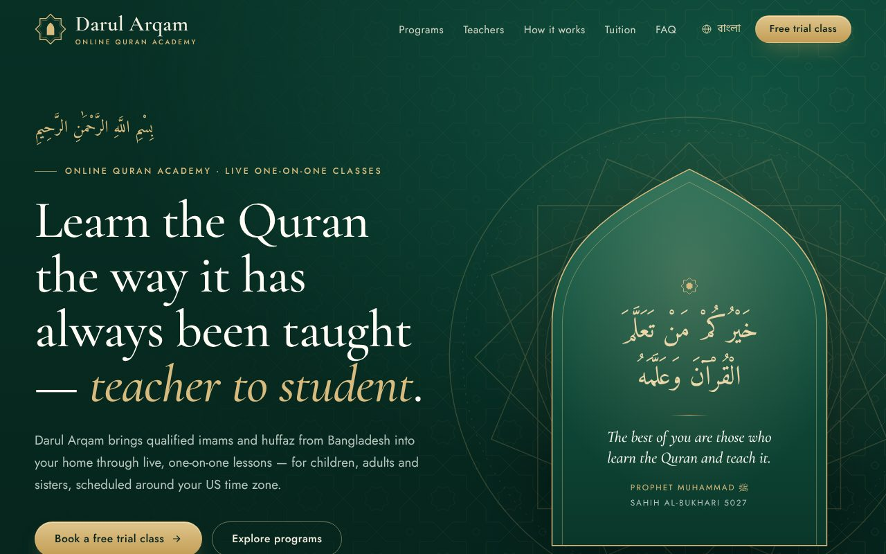
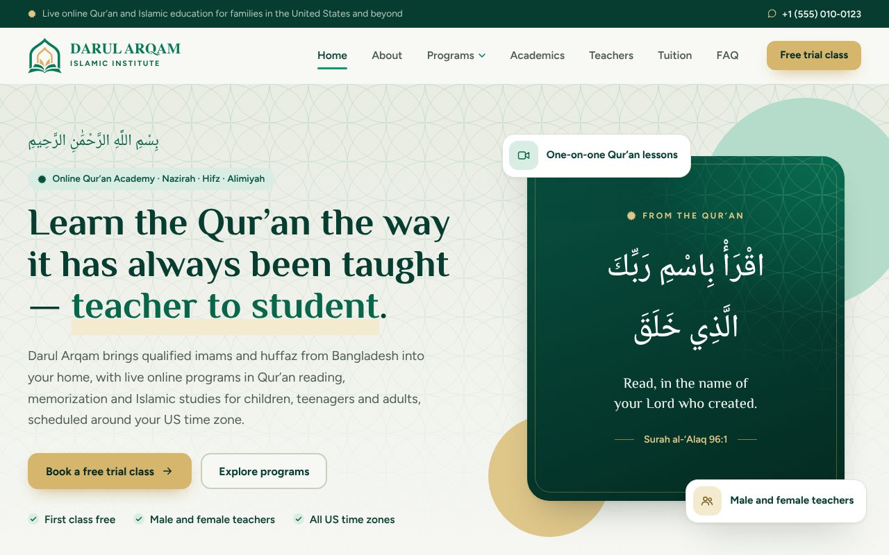
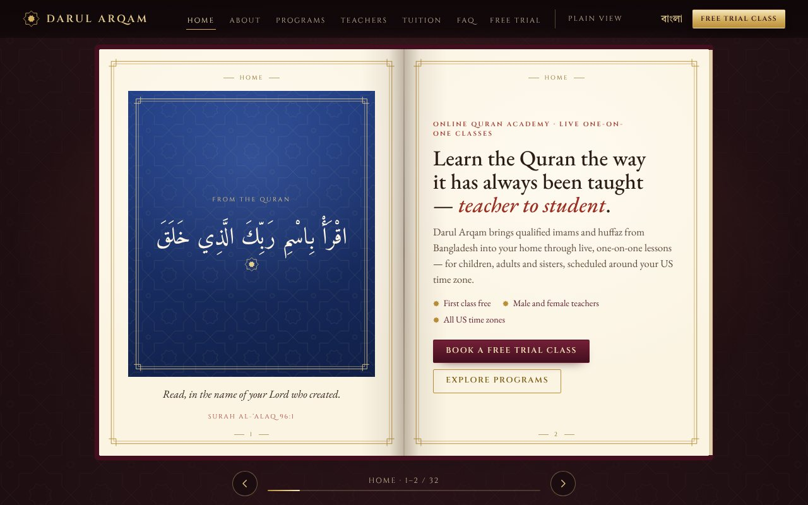

Darul Arqam · Online Quran Academy
Three designs to choose from
All three carry the same content, taken from the academy’s curriculum documents. Open each one and click through it.

Design 1Classic
- A long home page, with a page for each program
- The academy’s logo and colours, on deep emerald
- Pointed arches, a star lattice and serif lettering
Open design 1

Design 2Modern
- Twelve separate pages, each opening with a Quranic verse
- The academy’s logo and colours, on off-white
- Round forms, a lattice of circles and bold lettering
Open design 2

Design 3The book
- A book that opens, then turns its pages as you scroll
- Burgundy leather, gold leaf and cream paper
- Sixty-four pages in twelve chapters, each opening with a verse
Open design 3